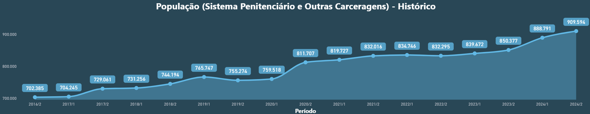
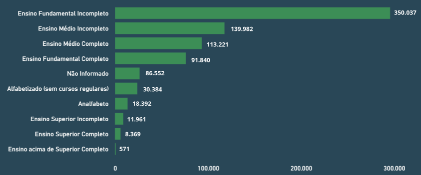

Apresentação da Unidade
Olá, estudante-trabalhador! Seja bem-vindo!
Nesta Unidade, vamos apresentar como se estruturam os sistemas prisionais no Brasil e no mundo. Iniciaremos com um breve panorama histórico do surgimento das instituições penais modernas.
Em seguida, abordaremos os diferentes modelos de organização prisional adotados em outros países e exploraremos como o sistema prisional brasileiro está organizado em termos de estrutura, filosofia e objetivos, destacando os tipos de pena existentes, os regimes de cumprimento e as principais características da população privada de liberdade brasileira.
Apresentaremos como se dá a gestão do sistema, os diferentes tipos de estabelecimento penal existentes, além de aspectos relacionados à estrutura física (como os projetos arquitetônicos e padrões de segurança), à estrutura jurídica voltada às pessoas privadas de liberdade e às classificações adotadas para os estabelecimentos penais brasileiros.
Por fim, discutiremos o direito à saúde nas instituições penais e os desafios enfrentados pelo sistema prisional e apresentaremos uma experiência exitosa brasileira, que oferece caminhos possíveis para a efetivação do acesso à saúde no sistema prisional.
Objetivos de Aprendizagem da Unidade
Conhecer os principais modelos de organização prisional no mundo;
Conhecer a história do sistema prisional no Brasil;
Especificar o modelo adotado em território brasileiro;
Identificar os tipos de estabelecimento penal, os tipos de gestão adotados e as estruturas físicas e jurídicas voltadas às pessoas privadas de liberdade;
Apontar as características da população privada de liberdade brasileira;
Reconhecer a importância da garantia do direito à saúde dessa população.
Carga Horária de Estudo: 5 horas
1.1 Breve história do sistema prisional no mundo e no Brasil
Para entender como surgiram as instituições penais modernas, precisamos compreender como o Estado passou a ser responsável pela execução das penas criminais e como essas penas foram mudando ao longo do tempo.
Você sabia que a expressão “olho por olho, dente por dente”, que às vezes ouvimos em conversas do dia a dia, tem origem em uma antiga lei chamada Lei de Talião? Pois é, essa lei foi utilizada por muitos povos antigos, como é o caso dos babilônios e hebreus. O princípio dessa lei era simples: a punição deveria ser proporcional ao crime cometido (Muraro, 2017). Se alguém fizesse algo de ruim para outra pessoa, a punição seria equivalente a esse ato.
Essa lei baseava-se na ideia de vingança privada, onde a vítima era responsável por aplicar a justiça, ou seja, era ela quem decidia a punição. Não havia intervenção do Estado nesse processo.
Com o tempo, toda a lógica de punição foi mudando, mas foi só na Revolução Industrial que as bases do sistema prisional moderno foram estabelecidas. Muita gente saiu do campo e foi para as cidades, o que causou superlotação urbana e falta de empregos. O aumento da pobreza e, consequentemente, dos pequenos crimes levou o Estado a criar instituições para controlar a população, como as primeiras casas de correição, que são os antecessores das instituições penais como as conhecemos hoje. Nessas casas, o objetivo era reformar as pessoas por meio do trabalho, buscando reintegrá-las à sociedade de maneira produtiva (Muraro, 2017).
Estados Unidos
Nos Estados Unidos, a origem das instituições penais modernas também teve forte influência do racismo. Mesmo após a abolição da escravidão, o regime de segregação permanecia inalterado e pessoas negras eram legalmente consideradas de segunda classe, ocasionando a restrição ou a completa negação de direitos a essas pessoas. O regulamento das primeiras prisões nos Estados Unidos mantinha características intrínsecas do período escravocrata, como é o exemplo da obrigação de trabalhar por longos períodos e a dependência de outras pessoas para o fornecimento de comida e abrigo (Davis, 2018).
Brasil
Colonização até a Constituição de 1824
Já no Brasil, da colonização até a Constituição de 1824, as leis eram baseadas nas Ordenações portuguesas, que aplicavam penas severas, como tortura e morte. Pessoas escravizadas eram julgadas e punidas diretamente por seus senhores. Com a Independência e a Constituição de 1824, começou-se a proibir penas cruéis, mas, mesmo com a criação das prisões, a lógica de punição de pessoas escravizadas se manteve, acentuando a diferenciação da punição entre as pessoas negras escravizadas e não escravizadas.
Brasil
Código Criminal de 1830
Depois, o Código Criminal de 1830 introduziu a pena de privação de liberdade, marcando a transição para o atual modelo prisional. A partir da Proclamação da República (1889), novos códigos penais foram criados.
Brasil
Código Penal de 1940 e Código Penal de 1969
O atual Código Penal, de 1940, eliminou a pena de morte e introduziu a progressão da pena. Durante a Ditadura Militar (1964-1985), no entanto, o Código Penal de 1969 voltou a prever penas de prisão perpétua e de morte, mas, com a redemocratização, essas medidas foram revistas.
Brasil
Lei de Execução Penal de 1984
Em 1984, foi aprovada a Lei de Execução Penal, que organiza e determina como as penas devem ser aplicadas, respeitando os direitos das pessoas privadas de liberdade e fortalecendo o papel do Estado nesse processo (Muraro, 2017).
1.2 Modelos de organização prisional no mundo
Vamos conversar um pouco sobre os modelos de organização prisional no mundo? Para entender como eles funcionam hoje, é essencial compreender por que estamos aprisionando tantas pessoas e quais fatores levaram ao aumento expressivo no número de pessoas privadas de liberdade.
A partir da década de 1970, houve um crescimento significativo nas taxas de aprisionamento em diversos países. Mas por quê? Segundo Pavarini (2006 apud Muraro, 2017), esse aumento aconteceu devido a uma combinação de fatores, como: a crise do Estado de Bem-Estar Social; o crescimento da criminalidade entre as décadas de 1970 e 1980; a criminalização das drogas; e o aumento da sensação de insegurança social, amplificada pelos meios de comunicação de massa. Mas vamos por partes. A seguir trataremos brevemente de cada um desses pontos.
A ideia de Estado de Bem-Estar Social foi criada pelos ingleses em 1945, logo após a Segunda Guerra Mundial, e visava proteger os cidadãos em momentos de vulnerabilidade. Na década de 1960, uma crise econômica originada por conflitos relacionados ao modelo de Estado de Bem-Estar Social fez com que muitas pessoas que antes eram assistidas financeiramente pelo governo passassem a não receber mais essa ajuda, e isso levou a um aumento da criminalidade nas décadas seguintes.
Enquanto isso, nos Estados Unidos, o uso de drogas começou a crescer, e tanto o uso como o tráfico de drogas passaram a ser caracterizados como responsáveis pelo aumento da criminalidade (National Research Council, 2014). Nesse contexto, a Lei Antidrogas, criada em 1986, durante o governo Reagan, gerou uma política penal desigual, que punia mais severamente o uso e o porte de crack do que de outras drogas. O problema era: o crack era muito mais barato do que outras drogas e, por isso, era mais consumido por pessoas pobres e minorias raciais, o que acabou criando uma situação de desigualdade social mais aprofundada.
De acordo com Pavarini (2006 apud Muraro, 2017), outro fator que contribui para o aumento das taxas de aprisionamento é o aumento da sensação de insegurança social, amplificada pelos meios de comunicação de massa, que está ligada ao fenômeno do neoliberalismo, em que os cidadãos excluídos pelo mercado de trabalho são vistos como um problema a ser “neutralizado”, levando à criminalização da pobreza.
Esse modelo penal ampliou a repressão e influenciou outros países, inclusive o Brasil. Por aqui, também começamos a ver um aprisionamento em massa, principalmente de pessoas que carregavam marcadores sociais de raça, gênero e classe. A população privada de liberdade não parou de crescer e aumentou consideravelmente no Brasil nas últimas décadas, sobretudo a partir da promulgação da Lei nº 11.343, de 23 de agosto de 2006, a Lei Antidrogas brasileira (Brasil, 2006), que intensificou a criminalização do tráfico de drogas e, por consequência, o aprisionamento (Campos, 2018). Para se ter uma ideia, entre os anos de 2000 e 2015, enquanto a população mundial cresceu em média 18% ao ano, a população privada de liberdade aumentou 20% (Muraro, 2017). O número de pessoas privadas de liberdade cresceu mais rápido que o número de pessoas no mundo!
Esses dados demonstram o quanto as políticas punitivas adotadas ao redor do mundo têm sido repressivas. Em 2025, de acordo com a base de dados World Prison Brief (2025), os países com o maior número de pessoas em cumprimento de pena são Estados Unidos, China, Brasil, Índia e Rússia, conforme Figura 1.
Figura 1 - Países com maior número de pessoas em cumprimento de pena
Fonte: World Prison Brief (2025).
Enquanto muitos países, especialmente nas Américas, adotaram, ao longo das últimas décadas, políticas cada vez mais punitivas e, com isso, aumentaram o número de pessoas presas, alguns países da Europa seguiram por um caminho diferente, o de adotar políticas menos repressivas, que ajudaram a reduzir as taxas de aprisionamento em 21% (Muraro, 2017). De acordo com Muraro (2017), alguns dos países com as menores taxas de aprisionamento são:
Clique para interagir
O que será que explica esse cenário? Será que esses países têm menores taxas de criminalidade ou lidam de forma diferente com esse assunto? De acordo com Zaffaroni (2013 apud Muraro 2017, p. 59), o número de pessoas presas em um país não está relacionado apenas à quantidade de crimes cometidos, mas principalmente às escolhas políticas e culturais daquele lugar.
1.3 Organização (estrutura, filosofia e objetivos) do sistema prisional brasileiro
Para compreender como funciona a aplicação de penas no Brasil em 2025, é importante recapitular que essa é uma atribuição do Estado, que a exerce por meio de uma estrutura e com base em uma filosofia e objetivos próprios. Antes da aplicação de uma pena, é necessário que haja um processo judicial, no qual o Estado deve apurar os fatos por meio de um juiz imparcial e competente, para só então aplicar a pena, caso seja confirmada alguma ilicitude (Brasil, 1984).
Você já ouviu falar do Código Penal (Decreto-Lei nº 2.848, de 7 de dezembro de 1940) (Brasil, 1940) e da Lei de Execução Penal (Lei nº 7.210, de 11 de julho de 1984) (Brasil, 1984)? Elas são as principais normas que tratam do direito penal no Brasil. A principal diferença entre elas é que o Código Penal define as penalidades, enquanto a Lei de Execução Penal regulamenta como essas penas devem ser cumpridas.
De acordo com o Código Penal Brasileiro, as penas podem ser de três tipos: privativas de liberdade, restritivas de direitos ou multa. O sistema de cumprimento de penas é progressivo e abrange três regimes: fechado, semiaberto e aberto (Brasil, 1940).
A pena privativa de liberdade é dividida em duas categorias: reclusão e detenção. A reclusão é uma pena mais grave, aplicada em crimes mais sérios, e pode ser cumprida em regime fechado, semiaberto ou aberto, dependendo do caso. O regime de reclusão é executado de forma progressiva, o que significa que a pena pode ser atenuada ao longo do tempo, se forem verificados bom comportamento da pessoa e o cumprimento de certos critérios (Brasil, 1940). Já a detenção é uma pena mais leve, aplicada em crimes menos graves, cumprida, geralmente, em regime semiaberto ou aberto. Os regimes funcionam assim (Brasil, 1940):
Clique para interagir
As penas restritivas de direitos, por sua vez, são diferentes e, em vez de impor a privação de liberdade a alguém, o juiz pode aplicar uma das seguintes medidas: prestação pecuniária (pagamento de uma quantia em dinheiro à vítima); perda de bens e valores (em favor do Fundo Penitenciário Nacional); limitação de fim de semana (obrigação de permanecer por cinco horas diárias aos sábados e domingos em estabelecimento penal); prestação de serviços à comunidade ou a entidades públicas, aplicável às condenações superiores a seis meses de privação da liberdade; e interdição temporária de direitos, como a proibição do exercício de certos cargos ou profissões (Brasil, 1940). Além disso, a pena de multa consiste no pagamento da quantia fixada na sentença ao Fundo Penitenciário Nacional.
A principal norma reguladora desse assunto é a Lei de Execução Penal. Ela é baseada na teoria da prevenção especial positiva, que defende que a pena tem o objetivo de melhorar o indivíduo a fim de possibilitar a sua ressocialização, reeducação e reinserção na sociedade (Fernandes; Matos, 2016). Para que a ressocialização ocorra de forma efetiva, a Lei de Execução Penal (Brasil, 1984) estabelece parâmetros que incluem:
Clique para interagir
É feita com base na personalidade e nos antecedentes da pessoa e é realizada pela Comissão Técnica de Classificação, composta por diversos profissionais como médico psiquiatra, psicólogo e assistente social;
É dever do Estado fornecer assistência material, à saúde, jurídica, educacional, social e religiosa, com o intuito de prevenir novos crimes e facilitar o retorno da pessoa à convivência social;
O acesso ao trabalho é considerado um dos pilares da ressocialização, com a finalidade educativa e produtiva;
Um conjunto de normas que funcionam como um código de postura, que orienta a forma como as pessoas em cumprimento de pena devem se comportar no sistema penal (Brasil, 1984 apud Muraro, 2017).
1.4 Caracterização da população privada de liberdade brasileira
No segundo semestre de 2024, a população privada de liberdade no Brasil era de 909.594 pessoas (Brasil, 2025a), das quais 674.543 cumpriam pena em estabelecimentos penais físicos e 235.051, em prisão domiciliar. Esse número tem crescido consideravelmente ao longo dos anos. A Figura 2 ilustra esse crescimento desde 2016.
Figura 2 - Crescimento da população privada de liberdade no Brasil, 2016/2-2024/2

Fonte: Brasil (2025a).Com relação ao perfil da população privada de liberdade, das 909.594 pessoas, apenas 53.880 (5,9%) são mulheres, enquanto 855.714 (94,1%) são homens. A faixa etária predominante em ambos os sexos está entre 35 e 45 anos. Há quase 22.000 pessoas privadas de liberdade com mais de 60 anos, das quais 4.618 têm mais de 70 anos.
No que diz respeito à cor, a predominante entre as pessoas privadas de liberdade no Brasil é a parda, seguida pelas cores branca e preta. Já com relação à população indígena, existem pouco mais de 2.000 indígenas privados de liberdade (Brasil, 2025a).
Há pouco mais de 9.000 pessoas privadas de liberdade com algum tipo de deficiência, das quais 513 são cadeirantes. Na população masculina, a deficiência física é a mais prevalente. Já na população feminina, a mais prevalente é a deficiência intelectual (Brasil, 2025a).
Dados sobre a orientação sexual das pessoas privadas de liberdade são escassos, já que nem todos os estados e estabelecimentos penais têm essas informações de forma detalhada. De acordo com a Secretaria Nacional de Políticas Penais (SENAPPEN), que realizou uma coleta de dados em 2022 para reunir informações sobre a população privada de liberdade de Lésbicas, Gays, Bissexuais, Travestis, Transexuais, Intersexos e Assexuais (LGBTIA+), no total, 12.356 pessoas privadas de liberdade se autodeclararam LGBTIA+ (Brasil, 2023a).
No que diz respeito à escolaridade, quando se analisa o perfil educacional das pessoas privadas de liberdade, é possível perceber que tanto homens quanto mulheres não concluíram o ensino fundamental, totalizando 350.037 pessoas. Esse dado é seguido de um número significativo de pessoas que também não concluíram o ensino médio (139.982). Ao todo, 490.019 pessoas em cumprimento de pena no Brasil não concluíram o ensino fundamental ou o ensino médio (Brasil, 2025a). Essa realidade já foi denunciada por estudos internacionais, como o relatório de tendências prisionais globais (Penal Reform International, 2015). Segundo o relatório, a grande maioria das pessoas privadas de liberdade ao redor do mundo provém das camadas mais pobres da sociedade, que têm pouco acesso ao sistema de ensino formal. A Figura 3 ilustra a distribuição das pessoas privadas de liberdade por grau de instrução.
Figura 3 - Quantidade de pessoas privadas de liberdade no Brasil por grau de instrução, 2024/2

Fonte: Brasil (2025a).Outro dado que chama bastante a atenção é o déficit de vagas nos estabelecimentos prisionais de regime fechado. No segundo semestre de 2024, a capacidade do sistema prisional era de 495.419 vagas para o cumprimento de penas em regime fechado. No entanto, havia 674.543 pessoas privadas de liberdade em regime fechado no país, o que caracteriza superlotação. Isso significa que há um excesso de quase 200 mil pessoas no sistema, portanto a taxa de ocupação é de 136,15% (Brasil, 2025a).
A instituição penal, por si só, é um ambiente desafiador para a prestação de cuidados em saúde. Imagine esse cenário sendo agravado por celas superlotadas, pouca ventilação, falta de higiene etc. Não é difícil concluir que os estabelecimentos prisionais, frequentemente insalubres, acabam contribuindo ainda mais para o adoecimento das pessoas.
E qual é o resultado disso? As taxas de infecção por HIV, hepatite B e C e tuberculose entre pessoas privadas de liberdade são significativamente maiores do que na população em geral (World Health Organization; United Nations Office On Drugs And Crime, 2013), o que demonstra a necessidade de se efetivar o acesso a serviços de saúde com alta capacidade resolutiva em ambientes prisionais.
1.5 Gestão do sistema prisional (tipos de estabelecimento penal) brasileiro
Um tema complexo e muito relevante para a garantia dos direitos humanos e efetividade das políticas de segurança pública é a gestão do sistema prisional. Você conhece o papel e a responsabilidade das esferas de governo nessa gestão? A gestão do sistema prisional brasileiro é dividida em duas esferas: federal e estadual. Cada uma delas desempenha um papel diferente na administração dos estabelecimentos penais.
No âmbito federal, a administração desses estabelecimentos é responsabilidade do Ministério da Justiça e Segurança Pública. Estão sob sua responsabilidade as chamadas Penitenciárias Federais, que abrigam pessoas envolvidas em questões de segurança pública. Já os sistemas prisionais estaduais e do Distrito Federal são administrados pelos respectivos governos por meio das Secretarias de Administração Penitenciária ou órgão congênere.
Você deve estar se perguntando: quais são os tipos de estabelecimento penal e por que são divididos assim? Eles são organizados de acordo com o tipo de regime (fechado, semiaberto e aberto) e com a situação jurídica da pessoa, ou seja, se ela já foi condenada ou ainda está aguardando julgamento. No Brasil, existem seis tipos de estabelecimento penal (Brasil, 1984):
Penitenciária;
Colônia Agrícola, Industrial ou Similar;
Casa do Albergado;
Centro de Observação;
Hospital de Custódia e Tratamento Psiquiátrico;
Cadeia Pública.
As penitenciárias são o tipo mais conhecido de estabelecimento penal. São destinadas ao cumprimento de pena em regime fechado, no qual a pessoa condenada deve ser alojada em cela.
As colônias agrícolas, industriais ou similares são destinadas ao cumprimento de pena em regime semiaberto. Nesse regime, a pessoa cumpre pena por um período de quatro a oito anos, com possibilidade de progressão do regime aberto ou regressão ao regime fechado.
As casas do albergado são voltadas para o cumprimento de pena em regime aberto ou para a limitação de fim de semana. No entanto, a falta desses locais em muitos estados brasileiros resulta na substituição da pena por prisão domiciliar, que frequentemente carece de fiscalização (Muraro, 2017).
Já a função dos centros de observação é realizar exames criminológicos e outros testes, cujos resultados são encaminhados à Comissão Técnica de Classificação. O objetivo desses exames é classificar a pessoa com base em sua personalidade, no crime cometido e na reincidência, garantindo sua alocação em estabelecimento adequado.
Os hospitais de custódia e tratamento psiquiátrico acolhem pessoas consideradas inimputáveis ou semi-inimputáveis, ou seja, aquelas que não podem ser responsabilizadas totalmente por seus atos (Brasil, 1984) e para as quais é aplicada a chamada medida de segurança. Em 2023, uma resolução importante foi publicada: a Resolução nº 487, de 15 de fevereiro de 2023, do Conselho Nacional de Justiça, que estabelece diretrizes para a implementação da Política Antimanicomial no Poder Judiciário. O objetivo foi revisar processos de pessoas internadas em hospitais de custódia e estabelecimentos penais ou similares, com foco na adoção de ações e estratégias que promovessem o cuidado e a inclusão social das pessoas em sofrimento psíquico, a chamada reabilitação psicossocial, e na progressiva extinção desse tipo de estabelecimento penal (Conselho Nacional de Justiça, 2023).
Por último, as cadeias públicas são estabelecimentos destinados às pessoas em prisão provisória e àquelas que ainda não foram condenadas, mas que tiveram prisão preventiva ou temporária decretada (Brasil, 1984).
Vamos praticar?
Caro estudante-trabalhador, agora que você já sabe os principais tipos de estabelecimento penal existentes no Brasil, é hora de fixar esse conhecimento de forma prática e rápida!
Preparamos um exercício especial para que você possa relacionar cada tipo de estabelecimento com sua principal função. Essa atividade vai te ajudar a consolidar o conteúdo e a entender melhor como funciona a organização do sistema prisional.
Vamos lá? Relacione corretamente o tipo de estabelecimento penal com sua função principal.
1.6 Estrutura física (projeto arquitetônico) e jurídica voltada às pessoas privadas de liberdade no Brasil
Será que a estrutura física (projeto arquitetônico) dos estabelecimentos voltados às pessoas privadas de liberdade tem alguma relação com o regime de cumprimento da pena? A resposta é sim. Os projetos arquitetônicos e as estruturas físicas dos estabelecimentos penais estão diretamente relacionados ao regime de cumprimento da pena, porque cada regime exige determinadas características arquitetônicas e físicas, como capacidade máxima e grau de segurança. A Lei de Execução Penal (Brasil, 1984) prevê, em seu Art. 88, que a pessoa privada de liberdade deve ser alojada em cela individual com área mínima de seis metros quadrados que contenha dormitório, aparelho sanitário e lavatório para a manutenção da salubridade, considerando fatores como aeração, insolação e condicionamento térmico adequado.
Duas resoluções orientam a construção e a segurança dessas unidades: a Resolução nº 9, de 9 de novembro de 2011 (Brasil, 2011), e a Resolução nº 16, de 10 de junho de 2021 (Brasil, 2021), ambas publicadas pelo Conselho Nacional de Política Criminal e Penitenciária (CNPCP), vinculado ao Ministério da Justiça e Segurança Pública.
A Resolução nº 9/2011 estabelece as orientações e recomendações técnicas para a construção de estabelecimentos prisionais. Entre os principais pontos estão: a capacidade dos estabelecimentos, os parâmetros arquitetônicos que devem ser adotados, a localização das instituições penais, as medidas de segurança contra incêndios e as condições de conforto ambiental, como ventilação e iluminação (Brasil, 2011). Já a Resolução nº 16/2021 trata da segurança interna dos estabelecimentos penais, proibindo, por exemplo, a instalação de tomadas e pontos de energia dentro e nas proximidades das celas. Essa medida tem como principal objetivo reduzir o uso de aparelhos celulares nos estabelecimentos para limitar a comunicação entre as pessoas privadas de liberdade e o ambiente externo (Brasil, 2021).
Já a estrutura jurídica do sistema prisional no Brasil é composta por diversos órgãos responsáveis pela execução penal. Cada um deles tem atribuições específicas, como veremos a seguir, incluindo o Conselho Nacional de Política Criminal e Penitenciária (CNPCP), o Juízo da Execução, o Ministério Público, o Conselho Penitenciário (COPEN), a Secretaria Nacional de Políticas Penais (SENAPPEN), o Patronato Penitenciário, o Conselho da Comunidade e a Defensoria Pública (Brasil, 1984). Além disso, cada estado tem sua Secretaria de Estado de Administração Penitenciária, responsável pela administração das instituições penais em sua região. A seguir, discutiremos de forma mais detalhada as funções de cada um desses órgãos.
Clique para interagir
O CNPCP é um órgão vinculado à SENAPPEN do Ministério da Justiça e Segurança Pública e tem várias funções importantes, como propor diretrizes para a política criminal e a instauração de sindicâncias e procedimentos administrativos, incluindo a interdição de estabelecimentos penais (Brasil, 1984).
O Juízo da Execução é o juiz responsável pela execução da pena, conforme determinado pela lei de organização judiciária de cada localidade. Quando este juiz estiver ausente, ele pode ser substituído pelo juiz que proferiu a sentença original.
Ao Ministério Público cabe a defesa da ordem jurídica, dos interesses individuais e coletivos e do regime democrático, atuando na execução penal e exercendo a função de fiscal da lei (Marcão, 2015 apud Muraro, 2017).
O COPEN tem a função de fiscalizar a execução da pena e funciona também como um órgão consultivo. Cada estado tem um Conselho Penitenciário próprio.
A SENAPPEN é vinculada ao Ministério da Justiça e Segurança Pública e tem a responsabilidade de acompanhar e controlar a aplicação da Lei de Execução Penal, bem como implementar as diretrizes da Política Penitenciária Nacional, estabelecidas, em grande parte, pelo CNPCP (Brasil, 2023b).
O Patronato Penitenciário atua na recepção de pessoas condenadas que cumprem pena em regime semiaberto ou aberto, pessoas que estão em liberdade condicional, pessoas em prisão domiciliar, pessoas que estão com suspensão condicional da pena ou exercendo trabalho externo e pessoas que saíram do sistema prisional. O principal objetivo do Patronato é promover a ressocialização e a reintegração da pessoa à família e à comunidade, com vistas à redução da reincidência criminal (Brasil, 1984).
O Conselho da Comunidade deve existir em cada unidade territorial de justiça e tem a responsabilidade de visitar mensalmente os estabelecimentos penais, entrevistar as pessoas presas, elaborar relatórios mensais e buscar recursos materiais e humanos para melhorar a assistência aos presos (Brasil, 1984).
A Defensoria Pública atua na defesa das pessoas privadas de liberdade que não têm condições financeiras de contratar um advogado. A assistência oferecida pela Defensoria pode ser realizada em todos os graus e instâncias, tanto de forma individual quanto coletiva. Também atua como um importante órgão de controle, que age para garantir o cumprimento da lei e defender os direitos das pessoas privadas de liberdade (Brasil, 1984).
1.7 Segurança e dinamismo do sistema prisional brasileiro
Uma importante classificação no âmbito do sistema prisional brasileiro é a do grau de segurança das penitenciárias. Essa classificação é feita pelo Ministério da Justiça e Segurança Pública e tem três categorias: Segurança Média, Segurança Máxima e Segurança Máxima Especial. As penitenciárias de Segurança Média e de Segurança Máxima contam com celas individuais e coletivas. As penitenciárias de Segurança Máxima Especial se diferenciam por serem equipadas exclusivamente com celas individuais, oferecendo maior controle e segurança (Barbosa, 2022).
A escolha do nível de segurança leva em consideração o perfil das pessoas privadas de liberdade que serão alocadas na penitenciária. Indivíduos que pertencem a facções criminosas ou que cometeram crimes graves, como os hediondos, e pessoas cuja segurança pessoal esteja em risco são alocados em penitenciárias de Segurança Máxima. Já as pessoas condenadas por crimes de menor gravidade são encaminhadas às penitenciárias de Segurança Média, que são compostas, geralmente, por celas coletivas.
As penitenciárias estaduais são de Segurança Média ou de Segurança Máxima, enquanto as penitenciárias federais são todas de Segurança Máxima Especial (Barbosa, 2022). Em 2025, o Brasil tem cinco penitenciárias federais, localizadas nas seguintes cidades: Brasília (Distrito Federal), Porto Velho (Rondônia), Mossoró (Rio Grande do Norte), Campo Grande (Mato Grosso do Sul) e Catanduvas (Paraná) (Brasil, 2025b).
1.8 Direito à saúde
Você sabia que, mesmo estando privada de liberdade, uma pessoa não perde todos os seus direitos?
Pois é, muita gente acredita que a privação da liberdade suspende completamente os direitos, mas isso não é verdade. O Código Penal Brasileiro (Brasil, 1940) estabelece, em seu Art. 38, que a pessoa privada de liberdade mantém todos os direitos não atingidos pela perda da liberdade. Em outras palavras, ela perde o direito de ir e vir, mas continua tendo direito à dignidade, à saúde e à integridade física e moral. Além disso, a Lei de Execução Penal trata da assistência às pessoas privadas de liberdade e egressas e prevê que lhes seja ofertada assistência material, à saúde, jurídica, educacional, social e religiosa (Brasil, 1984).
Você já parou para pensar como deve ser difícil garantir direitos em uma instituição penal?
Costumamos falar de direitos como algo universal, mas, na prática, o ambiente prisional impõe muitos desafios para que esses direitos sejam garantidos e protegidos.
E, quando o assunto é saúde, a situação se torna ainda mais complicada. Fazel e Baillargeon (2011) chamam a atenção para um dado alarmante: transtornos mentais e doenças infecciosas são mais comuns entre pessoas privadas de liberdade do que na população em geral. Quais razões você acha que explicam esse cenário? Um dos motivos é justamente as condições de vida que essas pessoas enfrentaram antes mesmo da prisão, um histórico de desigualdades sociais profundas, muitas vezes transmitidas de geração em geração (Organização Mundial da Saúde, 2019).
Diante disso, a conclusão é clara: o direito à saúde precisa ser encarado como uma prerrogativa básica nos estabelecimentos penais. Mais do que isso: esse direito deve ser garantido com qualidade e efetividade; não como uma concessão, mas como um dever do Estado.
1.9 Experiências exitosas no sistema prisional brasileiro
Uma experiência bem-sucedida relacionada ao direito à saúde é o Projeto Agentes Promotores de Saúde: cuidando e ressocializando vidas, realizado na cidade de Cuiabá, capital do estado de Mato Grosso. A iniciativa propõe a participação de pessoas privadas de liberdade como agentes de promoção da saúde no ambiente prisional. Elas circulam pelas alas e pavilhões das instituições penais com a missão de identificar demandas relacionadas à saúde, promover ações preventivas, apoiar processos de reabilitação e contribuir para o bem-estar da população privada de liberdade.
Dentre os principais resultados do projeto, destacam-se: a redução no número de novos casos de diversas doenças; a ampliação da capacidade de monitoramento de pessoas com problemas de saúde; o aumento do acesso aos serviços de saúde no sistema prisional; e a criação de oportunidades para a ressocialização dos participantes, fortalecendo seu papel social e contribuindo para a sua reintegração à sociedade.
Essa iniciativa pode ser acessada pelo endereço: https://www.prisoeslivresdetbcesp.com.br/projetoagentespromotoresdesaudecuidandoeressocializandovidas
Encerramento da Unidade
Finalizamos esta Unidade. Ao longo do conteúdo apresentado, você viu que entender o sistema prisional vai além de conhecer as normas e estruturas. A reflexão sobre a história do aprisionamento, os modelos internacionais e as especificidades do sistema brasileiro é fundamental para compreender como o sistema prisional evoluiu com o passar do tempo.
Ao explorar questões como segurança, saúde e desafios enfrentados, reforçamos que o cuidado e o respeito à dignidade são essenciais e devem ser mantidos mesmo no sistema prisional.
Esperamos que este conteúdo te inspire a enxergar não apenas funções técnicas, mas oportunidades reais de fazer a diferença na vida de pessoas que, muitas vezes, foram invisibilizadas.
Referências Importantes
BRASIL. Secretaria Nacional de Políticas Penais. SISDEPEN. Levantamento de Informações Penitenciárias. 2025a. Disponível em: https://www.gov.br/depen/pt-br/servicos/sisdepen. Acesso em: 6 abr. 2025.
BRASIL. Lei nº 7.210, de 11 de julho de 1984. Lei de Execução Penal. Diário Oficial da União, Brasília, DF, 13 jul. 1984. Disponível em: http://www.planalto.gov.br/ccivil_03/leis/l7210.htm. Acesso em: 15 jul. 2025.
BRASIL. Decreto-Lei nº 2.848, de 7 de dezembro de 1940. Código Penal. Diário Oficial da União, Rio de Janeiro, RJ, 31 dez. 1940. Disponível em: https://www.planalto.gov.br/ccivil_03/decreto-lei/del2848compilado.htm. cesso em: 15 jul. 2025.
MURARO, M. Sistema penitenciário e execução penal. Curitiba: InterSaberes, 2017.
Referências
BARBOSA, A. C. As penitenciárias de segurança máxima. Jusbrasil, 3 out. 2022. Disponível em: https://www.jusbrasil.com.br/artigos/as-penitenciarias-de-seguranca-maxima/1652257134. Acesso em: 15 jul. 2025.
BRASIL. Secretaria Nacional de Políticas Penais. SISDEPEN. Levantamento de Informações Penitenciárias. 2025a. Disponível em: https://www.gov.br/depen/pt-br/servicos/sisdepen. Acesso em: 6 abr. 2025.
BRASIL. Secretaria Nacional de Políticas Penais. SENAPPEN divulga nota técnica referente aos dados de pessoas presas LGBTI. gov.br, 1 fev. 2023a. Disponível em: https://www.gov.br/senappen/pt-br/assuntos/noticias/nota-tecnica-referente-a-politica-de-atencao-as-mulheres-e-aos-grupos-especificos-e-divulgada-pela-senappen Acesso em: 4 set. 2025.
BRASIL. Secretaria Nacional de Políticas Penais. Secretaria Nacional de Políticas Penais. gov.br, 2023b. Disponível em: https://www.gov.br/senappen/pt-br/acesso-a-informacao/institucional Acesso em: 4 set. 2025.
BRASIL. Conselho Nacional de Política Criminal e Penitenciária. Resolução nº 16, de 10 de junho de 2021. Estabelece medidas de eliminação de tomadas e pontos de energia do interior e das proximidades das celas nos estabelecimentos penais. Diário Oficial da União, Brasília, DF, 23 jun. 2021. Disponível em: https://www.gov.br/senappen/pt-br/composicao/cnpcp/resolucoes/resolucoes-2021/resolucao-no-16-de-10-de-junho-de-2021.pdf/view. Acesso em: 27 ago. 2025.
BRASIL. Conselho Nacional de Política Criminal e Penitenciária. Resolução nº 9, de 18 de novembro de 2011. Institui as Diretrizes Básicas para Arquitetura Penal. Diário Oficial da União, Brasília, DF, 21 nov. 2011. Disponível em: . Acesso em: 27 ago. 2025.
BRASIL. Lei nº 11.343, de 23 de agosto de 2006. Institui o Sistema Nacional de Políticas Públicas sobre Drogas - Sisnad; prescreve medidas para prevenção do uso indevido, atenção e reinserção social de usuários e dependentes de drogas; estabelece normas para repressão à produção não autorizada e ao tráfico ilícito de drogas; define crimes e dá outras providências. Diário Oficial da União, Brasília, DF, 24 ago. 2006. Disponível em: https://www.planalto.gov.br/ccivil_03/_ato2004-2006/2006/lei/l11343.htm Acesso em: 17 jul. 2025.
BRASIL. Lei nº 7.210, de 11 de julho de 1984. Lei de Execução Penal. Diário Oficial da União, Brasília, DF, 13 jul. 1984. Disponível em: http://www.planalto.gov.br/ccivil_03/leis/l7210.htm Acesso em: 15 jul. 2025.
BRASIL. Decreto-Lei nº 2.848, de 7 de dezembro de 1940. Código Penal. Diário Oficial da União, Rio de Janeiro, RJ, 31 dez. 1940. Disponível em: https://www.planalto.gov.br/ccivil_03/decreto-lei/del2848compilado.htm Acesso em: 15 jul. 2025.
CAMPOS, M. S. O novo nem sempre vem: Lei de Drogas e encarceramento no Brasil. Atlas da Violência, 18 dez. 2018. Disponível em: https://www.ipea.gov.br/atlasviolencia/artigo/134/o-novo-nem-sempre-vem-lei-de-drogas-e-encarceramento-no-brasil Acesso em: 15 jul. 2025.
CONSELHO NACIONAL DE JUSTIÇA. Resolução nº 487, de 15 de fevereiro de 2023. Institui a Política Antimanicomial do Poder Judiciário e estabelece procedimentos e diretrizes para implementar a Convenção Internacional dos Direitos das Pessoas com Deficiência e a Lei n. 10.216/2001, no âmbito do processo penal e da execução das medidas de segurança. DJe/CNJ, Brasília, DF, 27 fev. 2023. Disponível em: https://atos.cnj.jus.br/files/original2015232023022863fe60db44835.pdf Acesso em: 27 ago. 2025.
DAVIS, A. Estarão as prisões obsoletas? Rio de Janeiro: Difel, 2018.
FAZEL, S.; BAILLARGEON, J. The health of prisoners. Lancet, v. 377, n. 9769, p. 956-965, 2011. DOI: 10.1016/S0140-6736(10)61053-7.
FERNANDES, D. F.; MATOS, L. V. Apesar da pena: execução penal e redução de danos. Panóptica, n. 31, p. 158-183, 2016.
MURARO, M. Sistema penitenciário e execução penal. Curitiba: InterSaberes, 2017.
NATIONAL RESEARCH COUNCIL. The Growth of Incarceration in the United States: Exploring Causes and Consequences. Washington, D.C.: The National Academies Press, 2014. Disponível em: https://nap.nationalacademies.org/read/18613/chapter/6#119 Acesso em: 1 set. 2025.
ORGANIZAÇÃO MUNDIAL DA SAÚDE. Relatório sobre a situação da saúde prisional na Região Europeia da OMS. Copenhague: Escritório Regional da OMS para a Europa, 2019.
PENAL REFORM INTERNATIONAL. Global Prison Trends 2015. Londres: PRI, 2015. Disponível em: https://cdn.penalreform.org/wp-content/uploads/2015/04/PRI-Prisons-global-trends-report-LR.pdf Acesso em: 27 ago. 2025.
SANTOS, M. et al. Manual de intervenções ambientais para o controle da tuberculose nas prisões. Rio de Janeiro: Departamento Penitenciário Nacional, 2012.
WORLD HEALTH ORGANIZATION; UNITED NATIONS OFFICE ON DRUGS AND CRIME. Good governance for prison health in the 21st century: a policy brief on the organization of prison health. Copenhagen: WHO Regional Office for Europe, 2013. Disponível em: https://www.unodc.org/documents/hiv-aids/publications/Prisons_and_other_closed_settings/Good-governance-for-prison-health-in-the-21st-century.pdf Acesso em: 2 set. 2025.
WORLD PRISON BRIEF. Institute for Crime & Justice Policy Research. Highest to Lowest - Prison Population Total. 2025. Disponível em: https://www.prisonstudies.org/highest-to-lowest/prison-population-total Acesso em: 15 jul. 2025.
Minicurrículo da Autora
Graduada em Terapia Ocupacional pela Universidade de Brasília e Especialista em Saúde Coletiva pela Escola Superior de Ciências da Saúde do Distrito Federal. Já atuou como Terapeuta Ocupacional na Organização Social Santa Marcelina, em São Paulo, como gerente na Gerência de qualidade da Atenção Primária à Saúde e na Gerência de Atenção à Saúde de Populações em Situação Vulnerável e Programas Especiais da Secretaria de Estado de Saúde do Distrito Federal. Atuou como consultora no Ministério da Saúde na Coordenação-Geral de Programação do Financiamento da Atenção Primária à Saúde e como assessora técnica de saúde prisional na Coordenação de Acesso e Equidade da Secretaria de Atenção Primária. Também atuou como Apoiadora regional do Projeto Implementação e Fortalecimento do Apoio Matricial em Saúde Mental na Atenção Primária à Saúde do Distrito Federal.